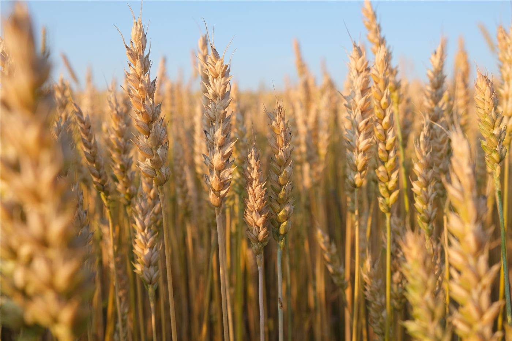

中, 여름 곡물 수확 「풍작 총력」… 식량 안보 다지기
중국이 여름 곡물(夏粮) 수확기를 맞아 풍작을 위한 총력 대응에 나섰다. 식량 생산을 안정적으로 확보하기 위한 정책 노력이 강조됐다고 환구망이 전했다.
강패산 기자 · 2026.06.18
橋중국·농업

환구망은 중국이 여름 곡물 수확을 앞두고 풍작을 거두기 위한 노력을 강화하고 있으며, 주요 곡창 지역의 생산 안정을 강조했다고 보도했다. 식량 안보를 국가 정책의 핵심 과제로 두고 농업 생산 기반을 다지는 데 초점을 맞춘 것이다.
광고 문의 · 300×250여름 곡물은 한 해 식량 수급의 향방을 가늠하는 중요한 지표다. 기상 여건, 병해충 관리, 수확·저장 체계가 종합적으로 작동해야 안정적 생산이 가능하다.
식량 안보는 인구 대국에 특히 중요한 과제다. 국제 곡물 가격과 공급망이 불안정해질 때, 자국 생산 기반의 안정은 가격과 공급의 완충 역할을 한다.
華橋時報는 농업·식량 정책을 사실 위주로 전한다. 식량의 안정적 공급은 물가와 민생에 직접 영향을 주는 보편적 관심사다.
출처·참고 (사실 확인용 — 본문은 직접 재작성)
· 환구망
· 환구망